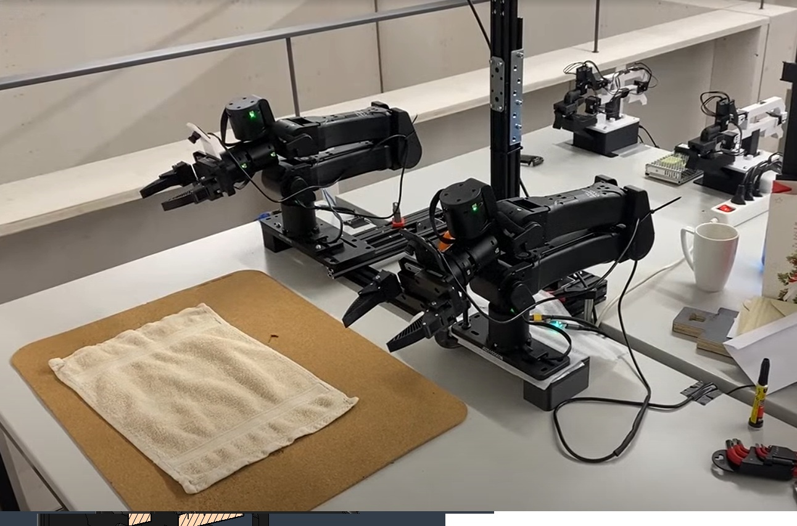
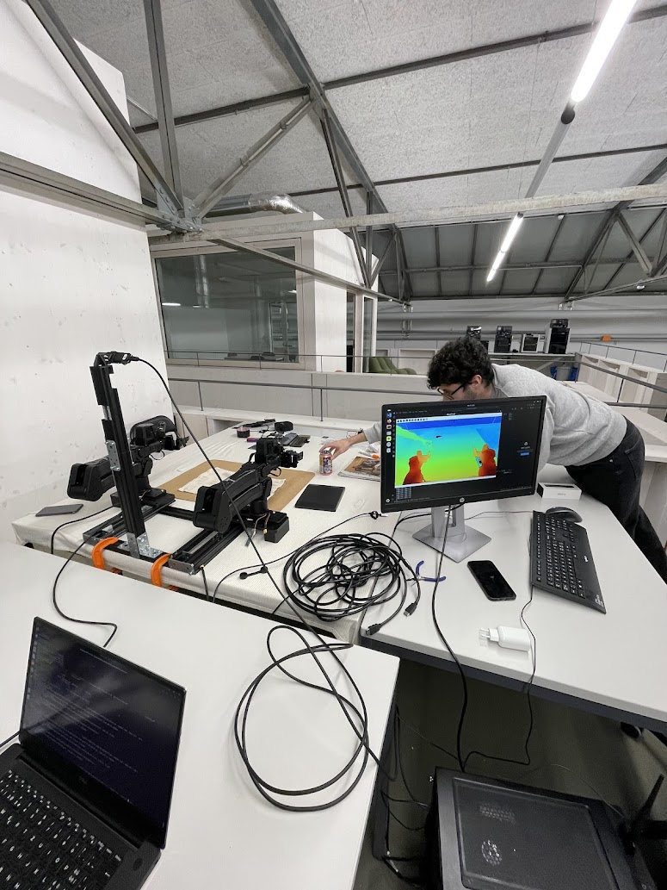

Project · Robot Learning · ETH Robotics Club · 2025
Autonomous Towel Folding
Finetuning ACT on a custom bimanual setup
Project lead · team of 20 students

The finetuned ACT policy autonomously folding a towel.
Why towel folding?
Folding a towel sounds trivial — until you ask a robot to do it. Towels are deformable, visually ambiguous, and require a long sequence of coordinated grasps, lifts, and re-grasps where every step depends on the outcome of the previous one. It's a textbook long-horizon manipulation benchmark.
The goal: take ACT — a state-of-the-art imitation learning algorithm from the ALOHA project — and get it running end-to-end on hardware we built ourselves from scratch.
The Hardware
We assembled a bimanual manipulation station around two YAM arms with parallel-jaw grippers, mounted on a rigid frame with multiple camera viewpoints. A leader-follower teleoperation rig let a human operator drive both arms simultaneously — this pipeline captured all our demonstration data.




ACT: The Algorithm
ACT predicts chunks of future actions instead of single-step commands — which massively reduces compounding error over long horizons. Here's the full pipeline:
See the scene
Multi-view RGB cameras capture the workspace. Current joint states of both arms are also fed in.
Understand the state
A CNN backbone encodes each camera view. A transformer encoder fuses vision + proprioception into a compact representation.
Plan a chunk of actions
A CVAE decoder outputs a chunk of N future joint commands for both arms simultaneously — smoothing out jitter and noise.
Move, then re-plan
Commands execute over N timesteps with temporal ensembling, then the next chunk is predicted from the new observation.
The Training Loop
Most of the semester was this loop. Collect demos, train, deploy, watch it fail, figure out why — hardware or data — and repeat. We ran hundreds of teleoperated demos across variations in towel configuration, lighting, and starting poses.
demos
policy
on robot
failures
iterate
We progressively scaled dataset size and tuned chunk size, learning rate schedules, and observation encoders. Hardware bugs — camera misalignment, gripper slippage, mount flex — consumed as much time as ML iteration.
It Works
After multiple rounds of data collection and training, the policy folds towels reliably across different starting configurations:
Autonomous rollouts across held-out towel configurations, lighting, and starting poses.
Behind the Scenes
Snapshots from the semester — setup tweaks, debugging sessions, and the moments that didn't make the highlight reel.

.PNG)
What We Learned
Hardware is the bottleneck
We rebuilt parts of the setup 3 times. Mount rigidity, camera placement, and gripper repeatability matter as much as the algorithm.
Quality beats quantity
A small, clean demo set outperformed a larger noisy one. Data curation is its own skill.
Team coordination is hard
Leading 20 students across hardware, data, and ML — keeping the critical path moving — was the hardest and most rewarding part.

What's next
Half-Humanoid Manipulation & Teleoperation Setup
Moving from parallel-jaw grippers to dexterous humanoid hands — targeting long-horizon dexterous manipulation. Announcing soon.
See all projects →